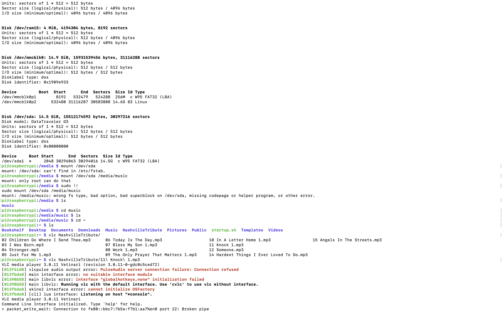

Programming
This project took a little more time to do, as I had to get aquainted with the code and format that the Raspberry Pi runs on. I downloaded an old Tabernacle Choir CD that I had on a flashdrive and added it to the Raspberry Pi, and then took some code for bluetooth that I found. It required a few tweaks but I got it working eventually. In the picture across is a sample of the working code that I used.
